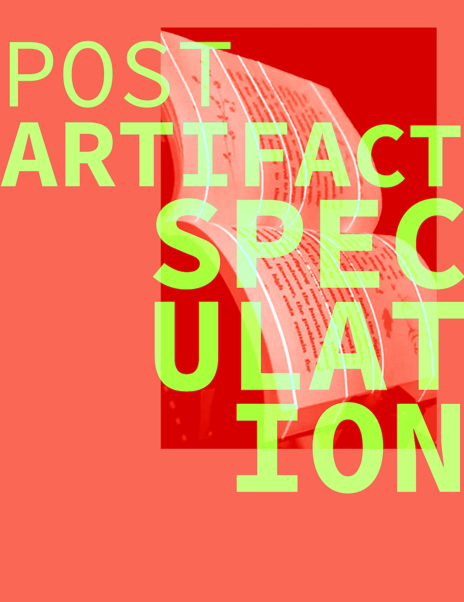
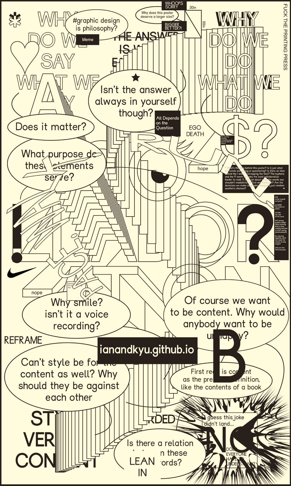
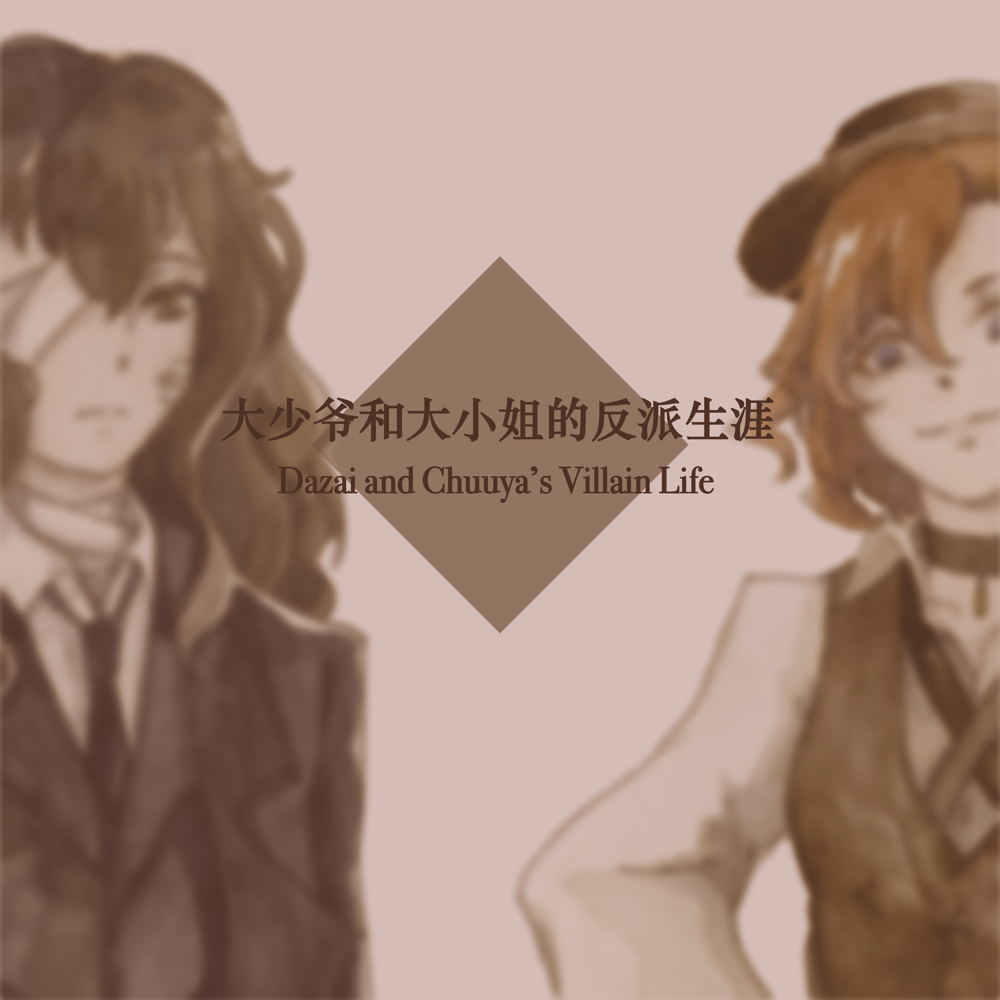
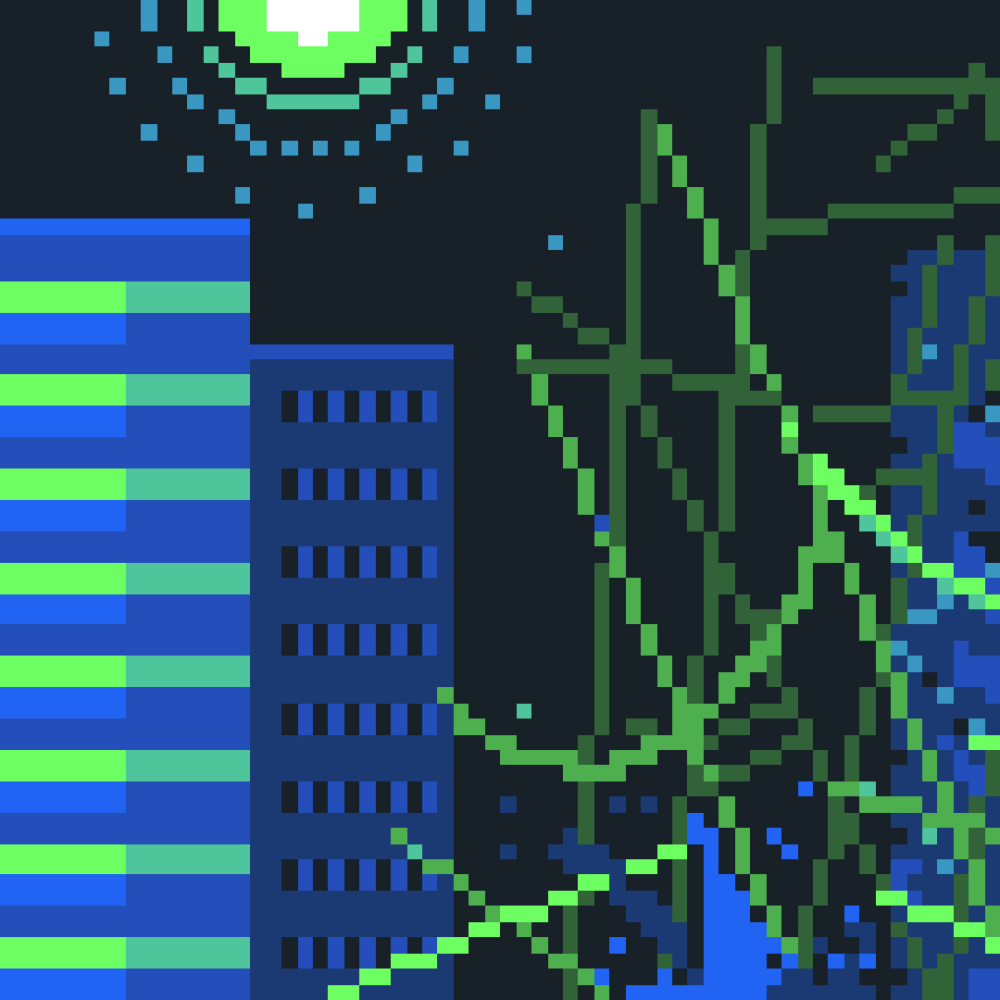
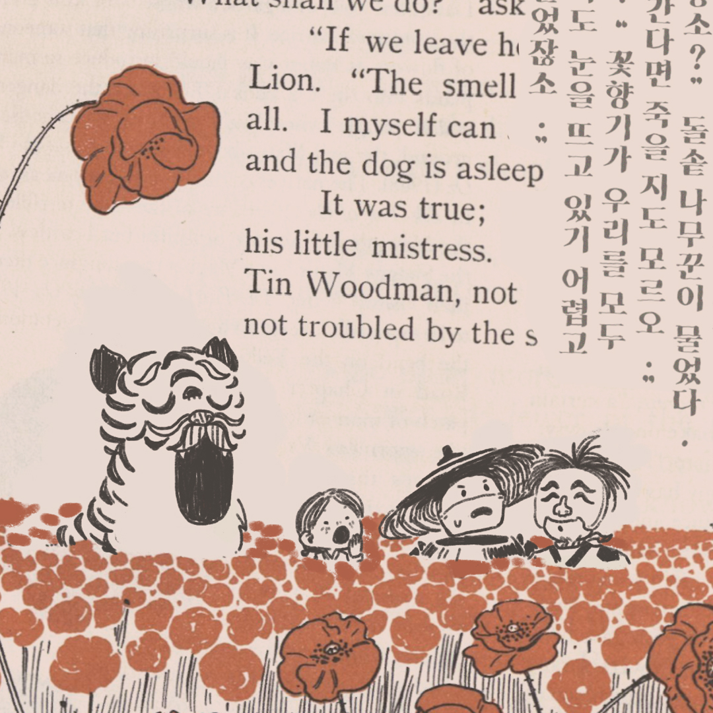
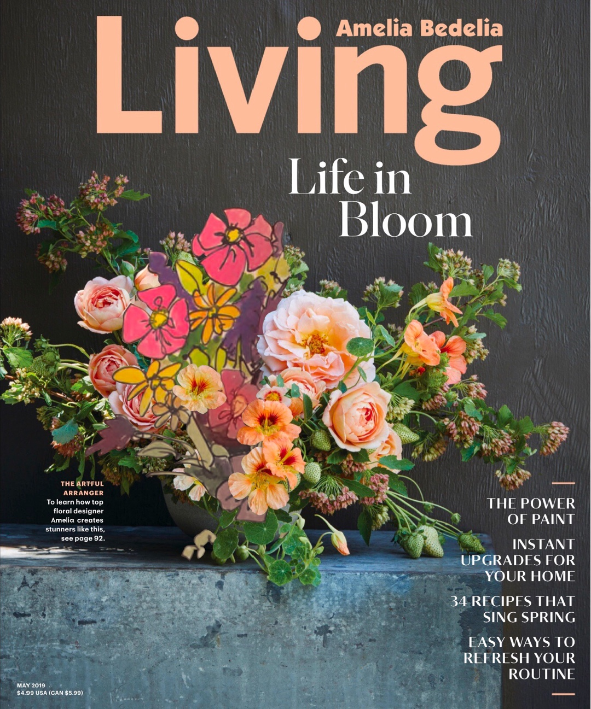
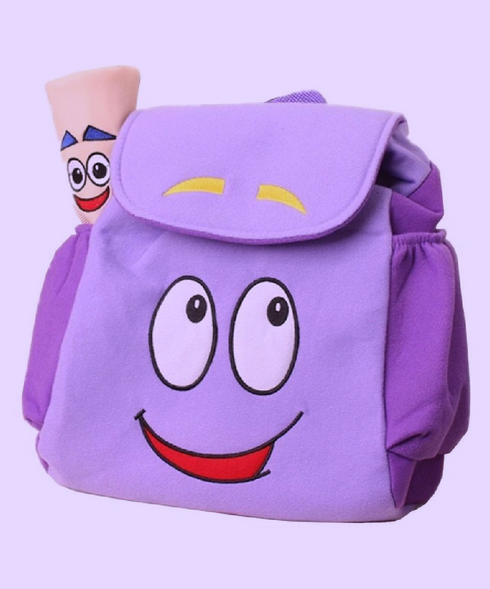
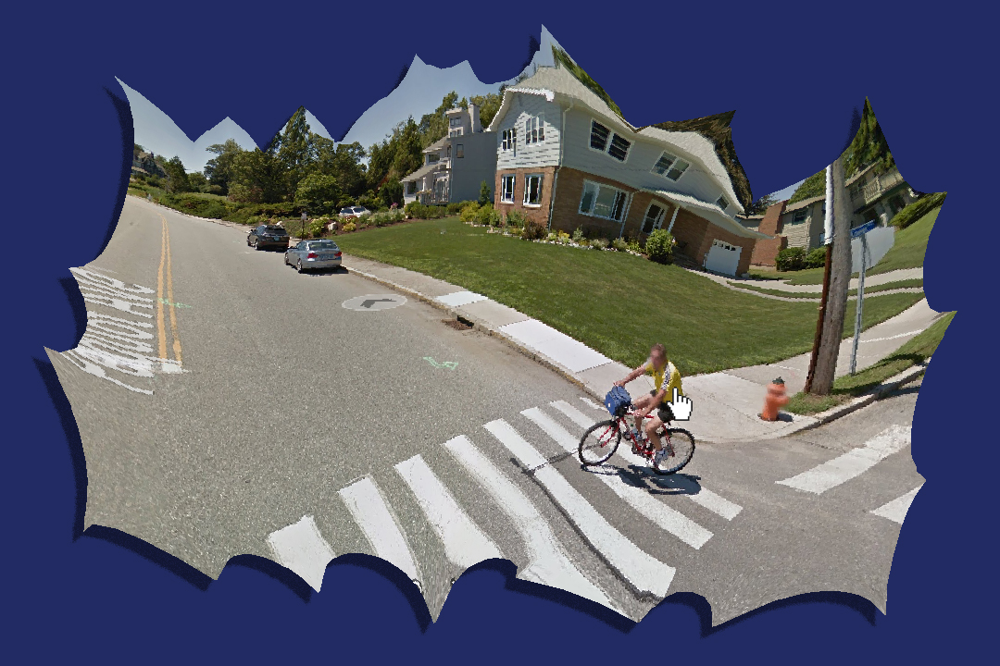
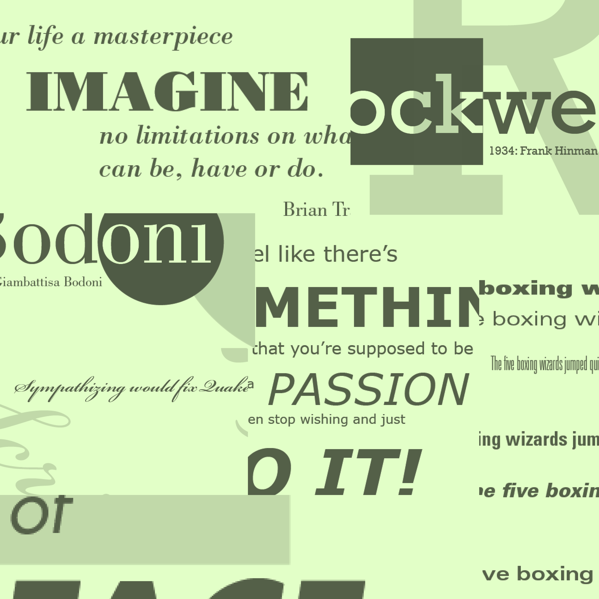
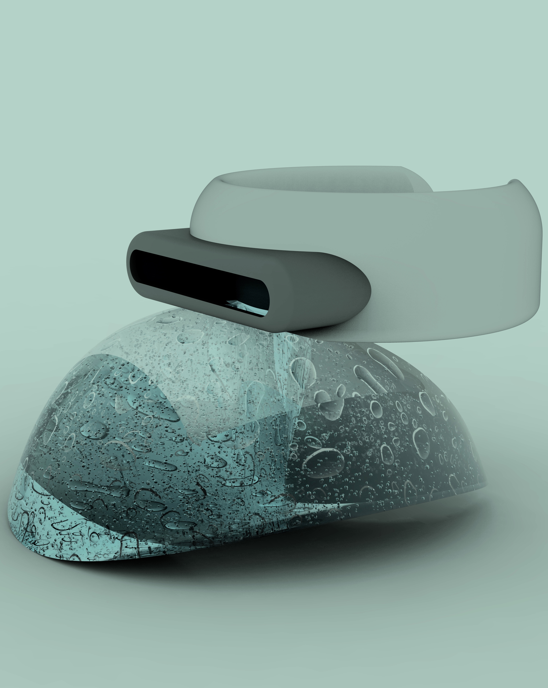

Speculation; Jason Urban, Richard Burrowes, Ian Griffin, Xia Jiang, Dana Kang, Francesca Mahaney, Cameron Schroeder, Melissa Xue, Michelle Wang, Lingyan Zhang
Improbable, and perhaps impossible, this anthology contains speculations on hypothetical futures of the book.
Red Woods, Richard Burrowes
This piece is a mash-up of Tom of Finland and the fairy tale Little Red Riding Hood intended as a play on gay coursing and hookup culture.

California Pink, Richard Burrowes
This piece is another mashup of a gay pinups magazine about burly men and the fairy tale The Three Little Pigs. The photography seems located in the west coast so I wanted to bring that freshness with the pink towns and also the playfulness.

!?, Ian Griffin and Kyu Ho Lee
We may regret everything that we say. And some things we already regret. But we still say them. We figure it's good to see where we were to see how we got to where we are today. !?
Do Not Read, Ian Griffin
DO NOT READ THIS UNLESS YOU REALLY WANT TO KNOW WHAT HAPPENED TO ME IN 2017: a story on first contact

TaLOL, Ali Jiang
This piece combines tarot symbology with the video game, League of Legends. It is a collection of five TaLOL cards, each representing a champion in game who is consistent with the original tarot card’s divinatory meaning. The patterns designed in the book are based on divination signs and LoL region icons.

大小姐和大少爷的反派生涯, Ali Jiang
This is a painted story cooperated with a song called “大小姐和大少爷的反派生涯”, originally created by JUST周存. It is about experiencing a book/story through sounds and images.
BLUEBERRYPI3, Dana Kang
A Cyberpunk This piece is a non-chronological and non-linear e-book project inspired by fandom wikipedia structure. Readers access articles by clicking through the hyperlinks to learn about the story surrounding Blueberry Pie. The very last article, the “ending”, can only be viewed when rest of the articles are unlocked.
Wizard of Oz, Dana Kang
Implementing digital drawings and texts over scanned pages of the original book, this project introduces traditional Korean folklore aesthetics to the western classic, The Wizard of Oz by L. Frank Baum.
Amelia Bedelia's Living Magazine, Francesca Mahaney
Someone’s hidden their treasure in a very special container, but can’t remember which one. They’ll need a brave explorer to help them out, is that you?
Add to Cart, Francesca Mahaney
Someone’s hidden their treasure in a very special container, but can’t remember which one. They’ll need a brave explorer to help them out, is that you?
Point of Impact, Cameron Schroeder
A collection of images compiled and arranged, captured from three separate films all dealing with relationships between men, capturing the moments two men touch in any way. This project aims to decontextualize touch, and examine intimacy, masculinity and relations between men as it is portrayed in media.

Do You Like To Look? , Cameron Schroeder
A speculative website design of Google Maps Street View screen captures arranged in a loose, free flowing narrative that is prompted as the viewer clicks through the site. The images were selected whenever a person was inadvertently captured by the Google Street View Camera and compiled. This project plays the viewer’s comfort levels when prompted to become a voyeur in an era of mass surveillance.
Change, Melissa Xue
This project combines modern and contemporary artists with famous paintings from history. How have the depictions of art changed over time?

JUST MY TYPE, Melissa Xue
Through this project, an exploration of typography is shown. By designing and learning the different typefaces that we see everyday, we are able to see how each and every one of them differ in their own way.
TOUCHE, Michelle Wang
This project investigates the aesthteics of luxury cosmetics and high-tech devices to question the the influx of “stuff” saturating our lives. In an age where more is more, young industrial designers are obliterating Dieter Rams’ Ten Commandments of Good Design as we scramble to produce new experience.
Cultural Appropriation, Michelle Wang
Cultural appropriation has only been talked about in the last few years. Is borrowing from another culture appreciation or appropriation?